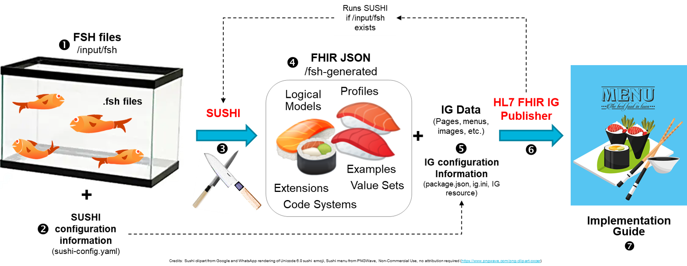

FHIR Shorthand
3.0.0 - 2nd Mixed Normative-Trial Use

FHIR Shorthand
3.0.0 - 2nd Mixed Normative-Trial Use

FHIR Shorthand - Local Development build (v3.0.0) built by the FHIR (HL7® FHIR® Standard) Build Tools. See the Directory of published versions
NOTE: Information on this page is informative content.
FHIR Shorthand (FSH) is a domain-specific language for defining FHIR artifacts involved in creation of FHIR Implementation Guides (IG). The language is specifically designed for this purpose, simple and compact, and allows the author to express their intent with fewer concerns about underlying FHIR mechanics. FSH can be created and updated using any text editor, and because it is text, it enables distributed, team-based development using source code control tools such as GitHub.
The complete FSH language is formally described in the FHIR Shorthand Language Reference. Here we present just enough to get a taste of FSH.
// as leading delimiter for single-line comments, and the pair /* */ to delimit multiple line comments.Asterisk Character: A leading asterisk is used to denote FSH rules. For example, here is a rule to set an element named active to true:
* active = true
\" to embed a quotation mark in a string.Caret Character: FSH uses caret syntax to directly reference the definitional structure associated with an item. When defining a profile, the caret character ^ (also called circumflex) allows you to refer to elements in the StructureDefinition. For example, to set the element StructureDefinition.experimental:
* ^experimental = false
Aliases: To improve readability, FSH allows the user to define aliases for URLs and object identifiers (OIDs). Once defined anywhere in a FSH project, the alias can be used most places a URL or OID is required or accepted. See Defining Aliases for details. By convention, aliases often begin with $ character, for example:
Alias: $SCT = http://snomed.info/sct
Coded Data Types: A leading hash sign (#) (aka number sign, pound sign, or octothorpe) is used in FSH to denote a code taken from a formal terminology. FSH provides special grammar for expressing FHIR's coded data types (code, Coding, and CodeableConcept) that combines the code system, code, and (optionally) a display text. Here is a SNOMED-CT code in this syntax, using the previously-defined alias:
$SCT#363346000 "Malignant neoplastic disease (disorder)"
FSH items represent FHIR artifacts such as profiles, value sets, and extensions. They are defined in three parts: (1) a declaration, (2) a set of keywords, and (3) a set of rules.
Declarations introduce and name new FSH items. Declarations are always the first statement in a FSH item. There are eleven declarations in FSH. Frequently-used declarations include Profile, Extension, ValueSet, and Instance. Here are two examples of declaration statements:
Profile: CancerDiseaseStatus
ValueSet: ConditionStatusTrendVS
Following the declaration, each FSH item has a set of required and optional keywords, as detailed in the FSH Language Reference. This example uses the keywords Parent, Id, Title, and Description following the Profile declaration:
Profile: CancerDiseaseStatus
Parent: Observation
Id: mcode-cancer-disease-status
Title: "Cancer Disease Status"
Description: "A clinician's qualitative judgment on the current trend of the cancer, e.g., whether it is stable, worsening (progressing), or improving (responding)."
The keyword section is followed by a number of rules. Rules are the mechanism for constraining a profile, defining an extension, creating slices, and more. All FSH rules begin with an asterisk. Here is a non-exhaustive summary of some of the more important rules in FSH:
Assignment rules are used to set fixed values in instances and required patterns in profiles. For example:
* bodySite.text = "Left ventricle"
* onsetDateTime = "2019-04-02"
* status = #arrived
* valueQuantity = UCUM#mm "millimeters"
Binding rules are used on elements with coded values to specify the set of enumerated values for that element. Binding rules include one of FHIR's binding strengths: example, preferred, extensible, or required. For example:
* gender from http://hl7.org/fhir/ValueSet/administrative-gender (required)
* address.state from USPSTwoLetterAlphabeticCodes (extensible) // USPSTwoLetterAlphabeticCodes is a value set defined in US Core
Cardinality rules constrain the number of occurrences of an element, either both upper and lower bounds, or just upper or lower bound. For example:
* note 1..1
* note 1..
* note ..1
Contains rules are used for slicing and extensions. Both cases involve specifying the type of elements that can appear in arrays.
The following rule slices Observation.component into the two components of blood pressure:
* component contains systolicBP 1..1 and diastolicBP 1..1
The syntax for extensions is similar, except a modified syntax that assigns local name to the extension must be used:
// Adding standard FHIR extensions in an AllergyIntolerance profile:
* extension contains
allergyintolerance-certainty named substanceCertainty 0..1 and
allergyintolerance-resolutionAge named resolutionAge 0..1
Flag rules add bits of information about elements impacting how implementers should handle them. The flags are those defined in FHIR, except FSH uses MS for must-support and SU for summary. For example:
* communication MS SU
* identifier and identifier.system and identifier.value MS
Type rules restrict the type of value that can be assigned to an element. For example:
* value[x] only CodeableConcept
* onset[x] only Period or Range
* recorder only Reference(Practitioner)
* recorder only Reference(Practitioner or PractitionerRole)
Value set rules are used to populate value sets. These rules can be defined two ways:
Extensional rules list individual codes to be included and/or excluded, for example:
* include $SCT#54102005 "G1 grade (finding)"
* exclude $SCT#12619005 "Tumor grade GX"
Intensional rules define the value set contents indirectly, for example:
* include codes from system http://www.nlm.nih.gov/research/umls/rxnorm
* include codes from valueset ConditionStatusTrendVS
* include codes from system $SCT where concept is-a #123037004 "BodyStructure"
* exclude codes from valueset EndStageRenalDiseaseVS
In this section, we will walk through a realistic example of FSH, line by line. This example does not show all the features of the FSH language.
1 Alias: $LNC = http://loinc.org
2 Alias: $SCT = http://snomed.info/sct
3
4 Profile: CancerDiseaseStatus
5 Parent: Observation
6 Id: mcode-cancer-disease-status
7 Title: "Cancer Disease Status"
8 Description: "A clinician's qualitative judgment on the current trend of the cancer, e.g., whether it is stable, worsening (progressing), or improving (responding)."
9 * ^status = #draft
10 * extension contains EvidenceType named evidenceType 0..*
11 * extension[evidenceType].valueCodeableConcept from CancerDiseaseStatusEvidenceTypeVS (required)
12 * status and code and subject and effective[x] and valueCodeableConcept MS
13 * bodySite 0..0
14 * specimen 0..0
15 * device 0..0
16 * referenceRange 0..0
17 * hasMember 0..0
18 * component 0..0
19 * interpretation 0..1
20 * subject 1..1
21 * basedOn only Reference(ServiceRequest or MedicationRequest)
22 * partOf only Reference(MedicationAdministration or MedicationStatement or Procedure)
23 * code = $LNC#88040-1
24 * subject only Reference(CancerPatient)
25 * focus only Reference(CancerCondition)
26 * performer only Reference(http://hl7.org/fhir/us/core/StructureDefinition/us-core-practitioner)
27 * effective[x] only dateTime or Period
28 * value[x] only CodeableConcept
29 * value[x] from ConditionStatusTrendVS (required)
30
31 Extension: EvidenceType
32 Id: mcode-evidence-type
33 Title: "Evidence Type"
34 Description: "Categorization of the kind of evidence used as input to the clinical judgment."
35 * value[x] only CodeableConcept
36
37 ValueSet: ConditionStatusTrendVS
38 Id: mcode-condition-status-trend-vs
39 Title: "Condition Status Trend Value Set"
40 Description: "How patient's given disease, condition, or ability is trending."
41 * $SCT#260415000 "Not detected (qualifier)"
42 * $SCT#268910001 "Patient condition improved (finding)"
43 * $SCT#359746009 "Patient's condition stable (finding)"
44 * $SCT#271299001 "Patient's condition worsened (finding)"
45 * $SCT#709137006 "Patient condition undetermined (finding)"
46
47 ValueSet: CancerDiseaseStatusEvidenceTypeVS
48 Id: mcode-cancer-disease-status-evidence-type-vs
49 Title: "Cancer Disease Status Evidence Type Value Set"
50 Description: "The type of evidence backing up the clinical determination of cancer progression."
51 * $SCT#363679005 "Imaging (procedure)"
52 * $SCT#252416005 "Histopathology test (procedure)"
53 * $SCT#711015009 "Assessment of symptom control (procedure)"
54 * $SCT#5880005 "Physical examination procedure (procedure)"
55 * $SCT#386344002 "Laboratory data interpretation (procedure)"
CancerDiseaseStatus. The name is typically PascalCase (also known as UpperCamelCase) and according to FHIR, should be "usable by machine processing applications such as code generation".StructureDefinition for profiles), and the profile’s id.status attribute in the StructureDefinition produced for this profile.EvidenceType, gives it the local name evidenceType, and assigns the cardinality 0..*. EvidenceType is defined on line 31.valueCodeableConcept of the evidenceType extension to a value set named CancerDiseaseStatusEvidenceTypeVS with a required binding strength. CancerDiseaseStatusEvidenceTypeVS is defined on line 47.value[x], a CodeableConcept, to the value set ConditionStatusTrendVS with a required binding. ConditionStatusTrendVS is defined on line 37.EvidenceType.value[x] element of the extension to a CodeableConcept.ConditionStatusTrendVS.CancerDiseaseStatusEvidenceTypeVS, similar to the previous one.A few things to note about this example:
extension[evidenceType].valueCodeableConcept. The Language Reference contains further descriptions of paths.This section presents an overview of how the FSH language is put into practice using SUSHI. SUSHI (an acronym for "SUSHI Unshortens SHorthand Inputs") is a reference implementation and de facto standard for a FSH compiler that translates FSH into FHIR artifacts such as profiles, extensions, and value sets.
The discussion in this section refers to the numbers in the following figure:

The process for installing SUSHI is described here. A text editor is also needed. Visual Studio Code has a useful FSH plug-in that knows FSH syntax and colorizes text accordingly.
To set up a directory structure for your IG, run sushi init at a command prompt. This will create the specific project structure required by the IG Publisher.
Content written in FSH is stored in plain text files (ASCII or UTF-8) with the .fsh extension (1). Any text editor can be used to create a FSH file. SUSHI lets the author decide how to allocate FSH definitions to .fsh files. Here are some possibilities:
Before running SUSHI, you must have a configuration file named sushi-config.yaml (2) containing some basic information about the project, such as its canonical URL.
When SUSHI runs (3), it gathers all FSH files from the given input directory's input/fsh subdirectory (1), and writes generated FHIR JSON artifacts to a given output directory (4). The input and output directories appear as SUSHI command line arguments. If unspecified, the input directory will default to the current directory, and outputs will be written to ./fsh-generated.
SUSHI can be run from the command line or invoked as part of the HL7 FHIR IG Publisher (6). The latter requires some additional configuration information and other IG data (5). If there are no FSH files in the project's [root]/input/fsh folder(1), the IG Publisher will not run SUSHI. The generated SUSHI output is found in the [root]/fsh-generated directory (4), and the implementation guide itself (7) is located in [root]/output.
For more information on the use of SUSHI and the IG Publisher, see the SUSHI Documentation.
IG © 2020+ HL7 International / FHIR Infrastructure. Package hl7.fhir.uv.shorthand#3.0.0 based on FHIR 4.0.1. Generated 2025-05-20
Links: Table of Contents |
QA Report
| Version History |
 |
Propose a change
|
Propose a change